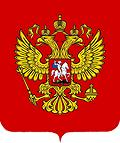

I have developed and produced these menus at a rate of almost one every two months. Every dish has been made at least twice, once to develop the recipe and once to serve it at the event. The actual events are summerazed on the page Successful Events.
Africa
East Africa #2
- October 2021East Africa #1
- German - October 2018West Africa #2
- English - 28 June 2018West Africa #1
- French - 28 April 2018North Africa #2
- April 2016North Africa #1
- December 2008Americas, Caribbean
Caribbean #1
- February 2019Americas, Mexico & Central
Mexico #1
- Mexican Composers - February 2015Americas, South
America, South #5
- Southern Cone - October 2022America, South #4
- Amazon #2 - June 2022America, South #3
- Amazon - October 2017America, South #2
- 20th Century - July 2013America, South #1
- Refugees - April 2013Asia, Central
Asia, Central #1
- Russian winter - December 2018Caucasus
Caucasus #1
- February 2016China
China #3
- February 2020China #2
- December 2016China #1
- October 2016Czech Republic
Czech #1
- August 2014England
England #1
- The Raj - April 2015Finland & Estonia
Finland #1
- February 2009France

French #6
- April 2022French #5
- Indochina - April 2017French #4
- Africa - April 2018French #3
- June 2014French #2
- April 2011French #1
- Offenbach - April 2010Germany
Germany #3
- East Africa - October 2018Germany #2
- Mozart - February 2010Germany #1
- Telemann - April 2009Greece
Greece #1
- Frank Zappa - April 2017Hungary
Hungary #1
- Zoltán Kodály - October 2013India
India #1
- The Raj - April 2015Ireland
Irish #1
- Aronold Bax - May 2009Italy
Italy #5
- Italian Night - October 2019Italy #4
- Octobween - October 2014Italy #3
- Samuel Barber - February 2014Italy #2
- Obscure Italians - April 2012Italy #1
- Rennaisance - August 2011Korea
Korea #1
- Halloween - May 2009Levantine
Levant #1
- Medieval - June 2019Modern Composers
Pacific Rim #1
- Very Modern Composers - June 2016Ottoman Empire
Ottoman #1
- Ottoman Empire - February 2015Philippines
Philippines #2
- Pagan - June 2017Philippines #1
- Eccentrics - April 2014Polish Lithuanian Commonwealth
Ukraine #1
- December 2018Russia & Siberia
